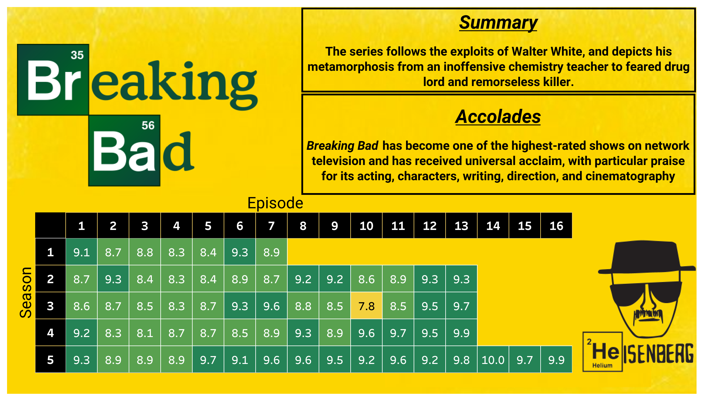
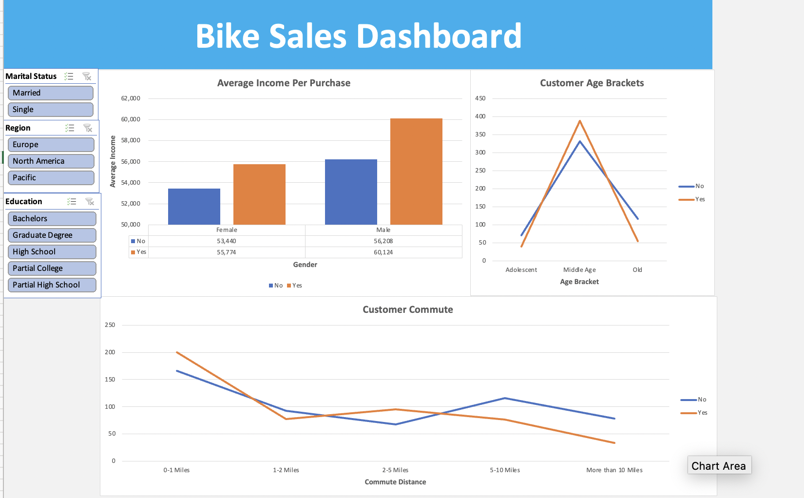

The Simpsons centers on a family and their life in a typical American town, serving as a satirical parody of a middle class American lifestyle. The series is one of the longest running TV show since 1989 and still going on.

Created a dashboard that visualizes the number of new COVID cases reported for each state in the U.S. between a period of 2 years, and what policies were implemented by the authorities as a response to it, so as to correlate the increase/decrease in number of cases with that particular policy implementation
This dashboard is about Goodreads, which is a social cataloging website that allows individuals to search its database of books, annotations, quotes, and reviews. Users can sign up and register books to generate library catalogs and reading lists. They can also create their own groups of book suggestions, surveys, polls, blogs, and discussions.
Created an Ethical & Deceptive visualization.
In Ethical visualization, the visualizations are clear and easy to interpret and
the sources of the data, including potential bias, is communicated.
In Deceptive visualization, the visual representation is intentionally inappropriate, overly complex and/or too cluttered for the audience. The labels, axes, and legends and data has been transformed in an intentionally misleading way.
A Dashboard based on the popular TV series - F.R.I.E.N.D.S. It is a 90's Comedy TV show, based in Manhattan, about 6 friends who go through just about every life experience imaginable together; love, marriage, divorce, children, heartbreaks, fights, new jobs and job losses and every other sort of drama.
A dashboard that visualizes data about road accidents, number of casualties and fatalities, by virtue of different factors based on an imaginary dataset.

A dashboard that visualizes data about the number of patients admitted in an Emergency Room at a fictional hospital.
A Prequel to the critically acclaimed TV show Breaking Bad. In this dashboard, we can observe the different ratings for each episode according to IMDB

Breaking Bad is a critically acclaimed and one of the best TV shows ever written. In this dashboard, we can observe the different ratings for each episode according to IMDB
The Visualization provides the details about different Movies & TV Shows on Netflix, their ratings, genre and much more.

In this dashboard, we can observe the different facts regarding the sales of bikes and the quantity of people using them in different regions belonging from various different educational backgrounds.
Created a visualization of different states in the US and compared their population with the population of Los Angeles County. Surprisingly, 40 states in the US have a resident population less than that of LA county in 2023
This dashboard displays the demonyms for each person living in a different state in the U.S. In other words, this visualization represents what a resident of a particular state in the U.S. is called.